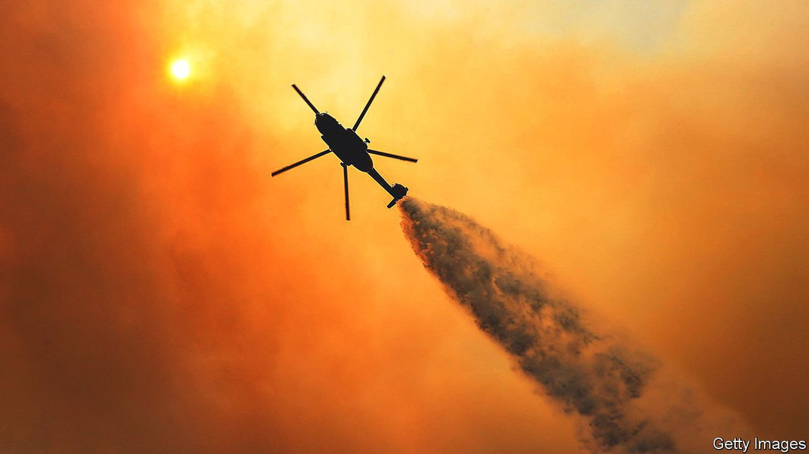
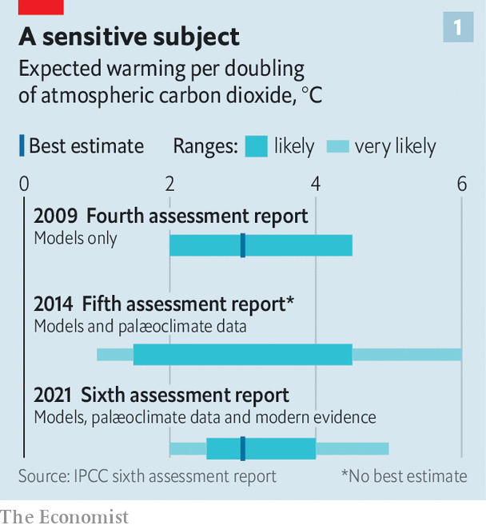
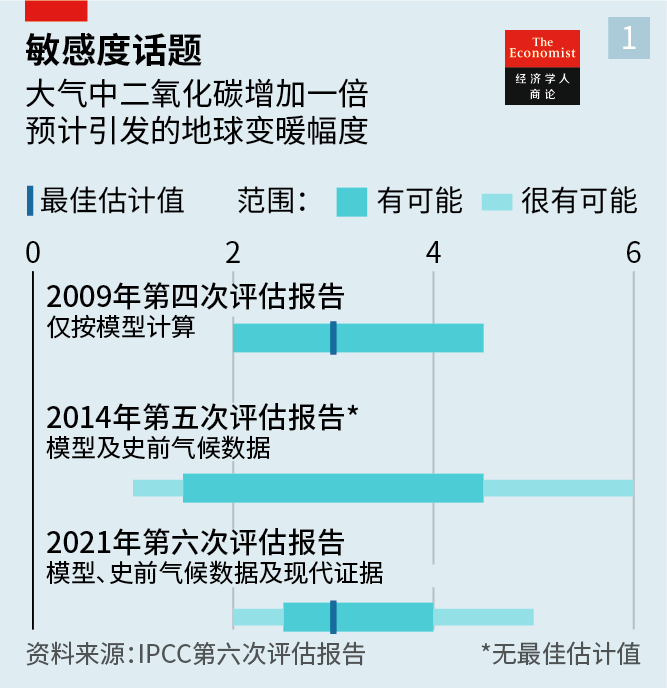
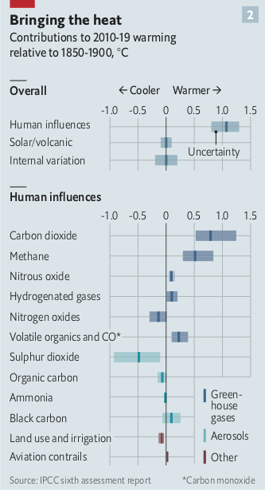
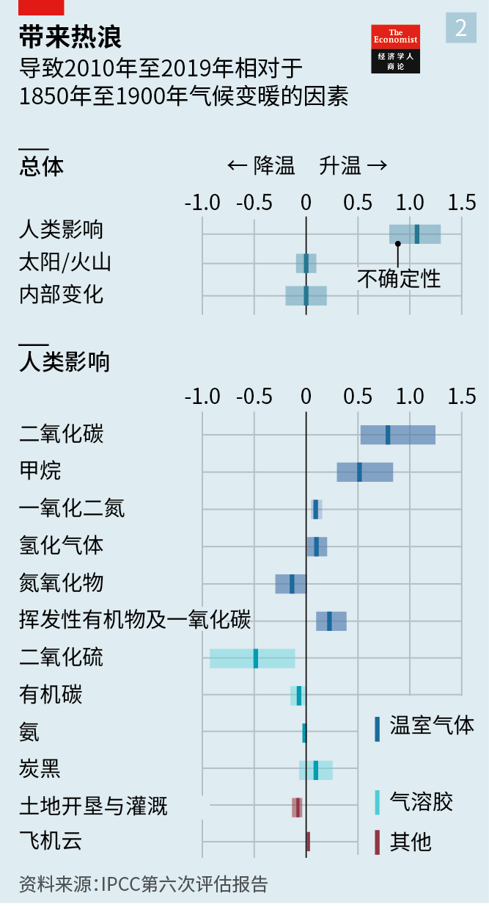

2021-08-23T16:06:20+00:00
A new reality
新现实
新現實
The IPCC delivers its starkest warning yet about climate change
IPCC发出迄今最严峻的气候变化警告
IPCC發出迄今最嚴峻的氣候變化警告
The effects of a hotter planet are visible around the world
地球变热的影响到处可见【深度】
地球變熱的影響到處可見【深度】

AT A KEY moment in the film “Jaws”, police chief Martin Brody, having known that a shark attack was possible, witnesses one actually happen. The director, Steven Spielberg, underlines the transformative nature of Brody’s shock with a shot which makes inspired use of a camera technique called a “dolly zoom”. Nothing on screen actually moves. But Brody’s guilty face seems to rush towards the audience, taking up more and more of the frame. At the same time his surroundings, rather than being displaced, are revealed more fully.
在电影《大白鲨》中，警察局长马丁·布罗迪（Martin Brody）事先就知道可能发生鲨鱼袭击事件。在片中一个关键场景中，他亲眼目睹了一次袭击真实发生。导演史蒂文·斯皮尔伯格在这里巧妙运用了名为“推轨变焦”的拍摄手法来突显布罗迪的震惊，预示着这个角色的行为将发生巨大的转变。画面中其实什么都没动，但布罗迪愧疚的脸庞却似乎在向观众冲来，在画面中不断放大，同时背景不但没有被遮盖，反而更宽广地展现出来。
在電影《大白鯊》中，警察局長馬丁·布羅迪（Martin Brody）事先就知道可能發生鯊魚襲擊事件。在片中一個關鍵場景中，他親眼目睹了一次襲擊真實發生。導演史蒂文·斯皮爾伯格在這裡巧妙運用了名為“推軌變焦”的拍攝手法來突顯布羅迪的震驚，預示着這個角色的行為將發生巨大的轉變。畫面中其實什麼都沒動，但布羅迪愧疚的臉龐卻似乎在向觀眾衝來，在畫面中不斷放大，同時背景不但沒有被遮蓋，反而更寬廣地展現出來。
The report released on August 9th by the Intergovernmental Panel on Climate Change, the first part of the IPCC’s sixth assessment report (AR6), presents the spectacle of the possible becoming real in a similarly unnerving way, mixing close-up alarm with wide-angle context. It is a starker and blunter document than its predecessor in AR5, which was published in 2013. The statements in the summary expressing “high confidence” handily outnumber those that offer only “medium confidence”. Last time around the two categories were roughly level pegging.
政府间气候变化专门委员会（以下简称IPCC）在8月9日发布了第六次评估报告（以下简称AR6）的第一部分，以同样令人不安的方式呈现了可能成真的前景：既用特写发出警示，也从广角展现背景。相比2013年发表的第五次评估报告（以下简称AR5），这份报告的语气更加冷峻直白。概述中表达出“高度可信”的陈述数量大大超过“比较可信”的次数。而在上一份报告中，两者大致持平。
政府間氣候變化專門委員會（以下簡稱IPCC）在8月9日發布了第六次評估報告（以下簡稱AR6）的第一部分，以同樣令人不安的方式呈現了可能成真的前景：既用特寫發出警示，也從廣角展現背景。相比2013年發表的第五次評估報告（以下簡稱AR5），這份報告的語氣更加冷峻直白。概述中表達出“高度可信”的陳述數量大大超過“比較可信”的次數。而在上一份報告中，兩者大致持平。
Part of that higher confidence is down to better science, which is welcome. Another part is down to bitter experience, which is not. The report stresses that the world is living through climate change, not watching it draw near. Its 234 authors base their conclusions, in a phrase that acts as something of a refrain, on “multiple lines of evidence”. Some of that evidence comes from computer models, and some from improved physical understanding of various planetary processes. Crucially, an increasing proportion comes from direct observations of the way in which the world has changed so far.
可信度提升的一方面要归功于科学进步，这是好事。而另一方面是因为苦果已经显现，这很糟糕。该报告强调，地球已经在经历气候变化了，而不是看着它逐步逼近。234名科学家参与撰写该报告，他们的结论基于“多方面的证据”，这个说法反复出现在报告中。其中一些证据来自计算机模型，另一些源于对各种行星演化过程的物理研究的进展。重要的是，越来越多的证据来自对迄今世界变化的直接观察。
可信度提升的一方面要歸功於科學進步，這是好事。而另一方面是因為苦果已經顯現，這很糟糕。該報告強調，地球已經在經歷氣候變化了，而不是看着它逐步逼近。234名科學家參與撰寫該報告，他們的結論基於“多方面的證據”，這個說法反覆出現在報告中。其中一些證據來自計算機模型，另一些源於對各種行星演化過程的物理研究的進展。重要的是，越來越多的證據來自對迄今世界變化的直接觀察。
Start with the predictions of what lies dead ahead. Over the past decade the Earth has been between 0.95°C and 1.2°C (1.7-2.2°F) hotter than it was in the second half of the 19th century; the best estimate is 1.1°C. That is more than 0.2°C higher than the change that AR5 found when it made the same comparison in the previous decade. Though some of the difference is now put down to AR5 having underestimated the then current temperatures, most is seen as being due to continued heating.
先看有关眼前变化的那些预测。过去十年，地球气温比19世纪后半叶高了0.95°C至1.2°C ，最佳估计值为1.1°C。这比AR5对它发布前的十年所做的同一比较发现的变化高了0.2℃不止。这一差异虽然有一部分被归结为AR5低估了当时的温度，但主要还是地球不断变暖的缘故。
先看有關眼前變化的那些預測。過去十年，地球氣溫比19世紀後半葉高了0.95°C至1.2°C ，最佳估計值為1.1°C。這比AR5對它發布前的十年所做的同一比較發現的變化高了0.2℃不止。這一差異雖然有一部分被歸結為AR5低估了當時的溫度，但主要還是地球不斷變暖的緣故。
The total amount by which the planet will heat up depends pretty closely on cumulative greenhouse-gas emissions. That allows the “carbon budgets” associated with various levels of worldwide temperature rise to be calculated. For AR6 this exercise in climate accounting has been gone through all over again.
地球将来的总升温很大程度上取决于累积的温室气体排放。因此，与各种全球升温程度对应的“碳预算”是可以计算出来的。AR6也再一次完成了这项气候核算工作。
地球將來的總升溫很大程度上取決於累積的溫室氣體排放。因此，與各種全球升溫程度對應的“碳預算”是可以計算出來的。AR6也再一次完成了這項氣候核算工作。
Worldwide greenhouse-gas emissions since 1850 are now put at 2,400bn tonnes of carbon dioxide, give or take 10%. Every subsequent 1,000bn tonnes is likely to cause between 0.27°C and 0.63°C more warming. If that seems quite imprecise, it is a much tighter estimate than was previously possible. Such calculations rely ultimately on how sensitive global temperatures are to rising carbon-dioxide levels. That crucial number is one of those things which is easier to estimate now that there is more experience to go on. The error range is notably smaller now than it was in AR5 (see chart 1).
目前估计，自1850年以来，全球温室气体排放量约为2.4万亿吨二氧化碳当量，上下误差在10%以内。之后每增加一万亿吨排放就可能导致气温上升0.27℃至0.63℃。这虽然看起来不算精确，但相比以往能得出的估计已经严谨得多。这类计算最终取决于全球气温对二氧化碳水平上升的敏感程度。如今有了更多经验可循，要估计包括这个关键数字在内的一些事情变得更容易了。现在的误差范围明显要比AR5时小（见图表1）。
目前估計，自1850年以來，全球溫室氣體排放量約為2.4萬億噸二氧化碳當量，上下誤差在10%以內。之後每增加一萬億噸排放就可能導致氣溫上升0.27℃至0.63℃。這雖然看起來不算精確，但相比以往能得出的估計已經嚴謹得多。這類計算最終取決於全球氣溫對二氧化碳水平上升的敏感程度。如今有了更多經驗可循，要估計包括這個關鍵數字在內的一些事情變得更容易了。現在的誤差範圍明顯要比AR5時小（見圖表1）。
The budget associated with a 50% chance of keeping warming below 1.5°C—the more ambitious of the two goals laid out in the Paris agreement of 2015—allows just 500bn more tonnes to be emitted. That is about 15 years of industrial emissions at current rates. To avoid busting that budget would require the whole world, not just rich countries, to get net emissions of carbon dioxide down to zero before 2050. That is a tall order, to put it mildly. Even the most ambitious of the various emissions scenarios modelled by the IPCC‘s experts offers less than a 50% chance of staying below 1.5°C of heating.
要有50%的机会把全球升温幅度控制在1.5℃以下（2015年《巴黎协定》的两个目标中较宏伟的那个），温室气体的排放预算就只剩5000亿吨。按目前的排放速度，这大约是15年的工业排放量。要避免超出这一预算，不仅是富裕国家，整个世界都必须在2050年之前把二氧化碳净排放量降至零。说得客气点，这很难办。即使是IPCC专家模拟的各种排放情境中最具减排野心的那种，把升温幅度控制在1.5℃以下的几率也不到50%。
要有50%的機會把全球升溫幅度控制在1.5℃以下（2015年《巴黎協定》的兩個目標中較宏偉的那個），溫室氣體的排放預算就只剩5000億噸。按目前的排放速度，這大約是15年的工業排放量。要避免超出這一預算，不僅是富裕國家，整個世界都必須在2050年之前把二氧化碳凈排放量降至零。說得客氣點，這很難辦。即使是IPCC專家模擬的各種排放情境中最具減排野心的那種，把升溫幅度控制在1.5℃以下的幾率也不到50%。
The very-low-emission scenarios do offer a fighting chance of keeping warming below 2°C. But the emission cuts they require go far beyond what the nations of the world have currently promised. What is more, those scenarios mandate not just heroic emission cuts but also “negative emissions”—techniques that actively remove carbon dioxide from the atmosphere, thus paying back some of the carbon budget spent previously. It is just about conceivable that, if emissions fall very quickly and carbon-dioxide removal scales up really well, warming may exceed 1.5°C during the coming decades but fall back below that level by the end of the century.
在那些排放水平很低的情境下，确实还有可能经过努力把升温控制在2℃以下，但所需减排量远远超出世界各国目前的承诺。更重要的是，这些情境不仅要求急剧减排，还需要实施“负排放”，即运用技术主动清除大气中的二氧化碳，以抵消之前消耗掉的一些碳预算。勉强可以想象一下，如果排放量迅速下降，二氧化碳得到大幅清除，在未来几十年升温幅度可能超过1.5℃，但到本世纪末会回落至该水平以下。
在那些排放水平很低的情境下，確實還有可能經過努力把升溫控制在2℃以下，但所需減排量遠遠超出世界各國目前的承諾。更重要的是，這些情境不僅要求急劇減排，還需要實施“負排放”，即運用技術主動清除大氣中的二氧化碳，以抵消之前消耗掉的一些碳預算。勉強可以想象一下，如果排放量迅速下降，二氧化碳得到大幅清除，在未來幾十年升溫幅度可能超過1.5℃，但到本世紀末會回落至該水平以下。
Happily, the report confirms that removing carbon dioxide from the atmosphere might be a plausible way of reducing temperatures. Since such removals now offer the only way of reconciling the modest near-term cuts currently enshrined in national policies with the much more dramatic long-term ambitions those same countries proclaim, this is just as well. If the IPCC had found large-scale carbon-dioxide removal untenable that would have put the kibosh on the whole idea of reaching net-zero emissions.
所幸，该报告证实从大气中清除二氧化碳也许是可行的降温方法。这是个好消息，毕竟，要调和各国目前已写入政策中的较保守的近期减排目标和这些国家宣称的更宏大的长期目标，当前唯一的办法就是清除二氧化碳。假如IPCC发现大规模清除二氧化碳行不通，净零排放这个想法也就会彻底泡汤。
所幸，該報告證實從大氣中清除二氧化碳也許是可行的降溫方法。這是個好消息，畢竟，要調和各國目前已寫入政策中的較保守的近期減排目標和這些國家宣稱的更宏大的長期目標，當前唯一的辦法就是清除二氧化碳。假如IPCC發現大規模清除二氧化碳行不通，凈零排放這個想法也就會徹底泡湯。
But the report also notes that such removals could affect more than just temperatures. They could also have an impact on food production, biodiversity and water availability and quality, especially if they are carried out through the use of huge forestry plantations. And it has nothing to say about how those systems might operate or how much they would cost—that work is left to the reports on impacts and on mitigation, which are due out next year.
但报告也指出，这种清除行动影响的也许不止是温度，还可能冲击粮食生产、生物多样性以及水资源的供应和质量，特别是通过大规模造林来清除二氧化碳的话。报告第一部分没有提及这些系统的运作方式或成本，预计明年公布的关于影响和缓解效果的报告将对此做出解释。
但報告也指出，這種清除行動影響的也許不止是溫度，還可能衝擊糧食生產、生物多樣性以及水資源的供應和質量，特別是通過大規模造林來清除二氧化碳的話。報告第一部分沒有提及這些系統的運作方式或成本，預計明年公布的關於影響和緩解效果的報告將對此做出解釋。
You’re going to need a cleaner boat
你需要一条更清洁的船
你需要一條更清潔的船
Meanwhile, in wide-angle, the predicted consequences of a warming world are becoming clearer and more fine-grained. Again, this is partly the product of better scientific understanding, and partly the product of direct experience. In 2013 AR5 referred to just three studies linking extreme weather events to rising temperatures. The authors of the latest report were able to assess hundreds of such event-attribution papers. Those allow it to make the clear statement that climate change is already affecting every inhabited region of the planet, with human influence contributing to many observed changes in weather and climate extremes.
同时，从更广阔的角度看，全球变暖的后果预测变得更清晰、细致。同样，这既是科学研究发展的结果，也是直接经验的产物。2013年发布的AR5只援引了三项有关极端天气事件与变暖关联的研究。AR6的作者则评估了数百份这样的天气事件归因文献。这使得报告能够明确指出气候变化已经在影响地球上每个有人居住的地区，而人类的影响是许多可观测到的天气变化和极端气候事件的原因之一。
同時，從更廣闊的角度看，全球變暖的後果預測變得更清晰、細緻。同樣，這既是科學研究發展的結果，也是直接經驗的產物。2013年發布的AR5隻援引了三項有關極端天氣事件與變暖關聯的研究。AR6的作者則評估了數百份這樣的天氣事件歸因文獻。這使得報告能夠明確指出氣候變化已經在影響地球上每個有人居住的地區，而人類的影響是許多可觀測到的天氣變化和極端氣候事件的原因之一。
The current trend towards more frequent and intense heavy rainfall will continue, but not monotonically; rain and snowfall will become more variable within seasons and, probably, from year to year. The authors are thus fairly certain that flooding will be more frequent and intense in most of Asia and Africa if the world warms by 1.5°C, and pretty sure the same changes will be seen in North America and Europe. Earlier melting of mountain snow-packs will add to the flood risk in some areas; in others, higher sea levels will raise the risk, as will the greater frequency of the most intense tropical cyclones.
如今强降雨更频繁猛烈的趋势将持续下去，但不是简单的重复：降雨和降雪的季节内变化会加大，而且可能每年的情况都不一样。因此，报告的作者们相当肯定地指出，如果全球变暖1.5℃，在亚洲和非洲的大部分地区，洪灾会更频繁、更凶猛，北美和欧洲也很可能出现同样的情况。山区积雪提前融化将加剧一些地区的洪灾风险，而在其他地区，威胁将来自海平面上升以及更频繁的超强热带气旋。
如今強降雨更頻繁猛烈的趨勢將持續下去，但不是簡單的重複：降雨和降雪的季節內變化會加大，而且可能每年的情況都不一樣。因此，報告的作者們相當肯定地指出，如果全球變暖1.5℃，在亞洲和非洲的大部分地區，洪災會更頻繁、更兇猛，北美和歐洲也很可能出現同樣的情況。山區積雪提前融化將加劇一些地區的洪災風險，而在其他地區，威脅將來自海平面上升以及更頻繁的超強熱帶氣旋。
Heatwaves will climb in number and severity. Extreme “wet-bulb” temperatures—a measure which includes the degree to which humidity makes it harder for the human body to shed heat—will become more common more quickly than unadjusted high temperatures do. Temperatures on the hottest days in some mid-latitude regions, including parts of Europe, will rise 1.5 to 2 times as fast as global warming more generally.
热浪出现的次数和严重程度都会攀升。极端“湿球”温度（这一指标计入了高湿度让人体难以散热的程度）相比未经调整的高温将更快成为更普遍的现象。在包括欧洲部分地区的中纬度地带，最热季节的升温速度将会是全球变暖速度的1.5至2倍。
熱浪出現的次數和嚴重程度都會攀升。極端“濕球”溫度（這一指標計入了高濕度讓人體難以散熱的程度）相比未經調整的高溫將更快成為更普遍的現象。在包括歐洲部分地區的中緯度地帶，最熱季節的升溫速度將會是全球變暖速度的1.5至2倍。
The oceans will heat up more slowly than the land. But as they do so they will expand and rise, a trend exacerbated by the melting of glaciers and ice caps. The warming will not be even. The Arctic will heat up more than other seas; in every one of the IPCC’s scenarios there will be sea-ice-free days in the Arctic by the middle of the century. There will be local aberrations, too. Marine heatwaves—short-lived bursts of hot water which have only recently become a topic of concern—are expected to continue to become more common, especially in the tropics and the Arctic.
海洋升温会比陆地慢。但当海洋升温时，海水会膨胀，海面会上升，而冰川和冰盖融化更加剧了这一趋势。变暖将不会均匀地发生。北冰洋的变暖程度将高于其他海洋；在IPCC推演的每种情境中，到本世纪中叶，北冰洋每年都将出现没有海冰的日子。还会出现局部反常现象。预计海洋热浪（暂时性的海水高温现象，近些年才引起关注）将不断变得更普遍，特别是在热带地区和北冰洋。
海洋升溫會比陸地慢。但當海洋升溫時，海水會膨脹，海面會上升，而冰川和冰蓋融化更加劇了這一趨勢。變暖將不會均勻地發生。北冰洋的變暖程度將高於其他海洋；在IPCC推演的每種情境中，到本世紀中葉，北冰洋每年都將出現沒有海冰的日子。還會出現局部反常現象。預計海洋熱浪（暫時性的海水高溫現象，近些年才引起關注）將不斷變得更普遍，特別是在熱帶地區和北冰洋。
Ocean warming will also suppress the tendency of waters from different depths to mix. Both the heatwaves and the increased stratification will have ecological effects that may be profound, both in the Arctic and beyond.
海洋变暖也将抑制不同深度的海水混合的倾向。热浪及海水分层加剧都可能对北冰洋和其他地区的生态环境产生深远影响。
海洋變暖也將抑制不同深度的海水混合的傾向。熱浪及海水分層加劇都可能對北冰洋和其他地區的生態環境產生深遠影響。
Generally speaking, what is wet becomes wetter, what is dry, drier, and what is uncommon more common. The rarer the event, the higher the likelihood that it will become more frequent. Even at 1.5°C of heating the report warns there will be some events—heatwaves, droughts and such—that are more severe than any that have been observed before. This is true at a global level as well as a regional one. “Low-likelihood, high-impact” events are, by their nature, hard to be specific about. It is a good bet they become more likely with higher temperatures. But even at comparatively modest levels of warming such calamities as widespread forest dieback or a collapsing Antarctic ice sheet are hard to completely rule out.
总的来说就是，涝的愈涝，旱的愈旱，稀奇变寻常。越是罕见的气候现象越有可能更频繁地出现。报告警告称，即使只升温1.5℃，热浪、旱灾等气候事件也可能比以往所见更严重，在全球和区域层面都是如此。“低可能性、高冲击性”的事件本身就是很难具体预测的。八九不离十的是，随着温度升高，这些事件将更可能出现。但即使变暖程度相对轻微，森林大范围梢枯或南极冰盖崩塌等灾难也难以完全排除。
總的來說就是，澇的愈澇，旱的愈旱，稀奇變尋常。越是罕見的氣候現象越有可能更頻繁地出現。報告警告稱，即使只升溫1.5℃，熱浪、旱災等氣候事件也可能比以往所見更嚴重，在全球和區域層面都是如此。“低可能性、高衝擊性”的事件本身就是很難具體預測的。八九不離十的是，隨着溫度升高，這些事件將更可能出現。但即使變暖程度相對輕微，森林大範圍梢枯或南極冰蓋崩塌等災難也難以完全排除。
Recommendations about what to do are not part of this report’s remit. But nevertheless it pushes hard for more and stronger action on methane. In terms of its contribution to warming so far, methane is second only to carbon dioxide (see chart 2). Atmospheric levels of the stuff, like those of carbon dioxide, are higher than at any other point in human history. But unlike carbon dioxide, atmospheric methane is transient—it has an atmospheric half-life of less than a decade. This means that cuts in methane emissions pay off much faster than cuts in carbon dioxide. If the world is really serious about trying to keep below 2°C of warming, let alone 1.5°C, doubling down on attempts to cut methane emissions, both from industry and agriculture, should be a high priority.
提出对策不在这份报告的范围之内。尽管如此，报告还是大力敦促加强限制甲烷排放。论迄今对气候变暖的推动作用，甲烷仅次于二氧化碳（见图表2）。和二氧化碳一样，目前大气中的甲烷水平比人类史上任何时期都要高。但不同于二氧化碳，甲烷在大气中的存留时间短，半衰期不到十年。这意味着减少甲烷排放比减少二氧化碳排放收效快得多。如果世界真想把升温控制在2℃以下（更别说1.5℃），一大要务应是加倍努力减少工业和农业甲烷排放。
提出對策不在這份報告的範圍之內。儘管如此，報告還是大力敦促加強限制甲烷排放。論迄今對氣候變暖的推動作用，甲烷僅次於二氧化碳（見圖表2）。和二氧化碳一樣，目前大氣中的甲烷水平比人類史上任何時期都要高。但不同於二氧化碳，甲烷在大氣中的存留時間短，半衰期不到十年。這意味着減少甲烷排放比減少二氧化碳排放收效快得多。如果世界真想把升溫控制在2℃以下（更別說1.5℃），一大要務應是加倍努力減少工業和農業甲烷排放。
As the report points out, this is particularly important because of the effects of another pollutant. Sulphates are given off mostly by coal plants and the sorts of heavy fuel oils that power big ships. They have the opposite effect to methane and carbon dioxide: by reflecting sunlight back into space, they cool the planet. The IPCC reckons sulphate pollution keeps the world about 0.5°C cooler than it would otherwise be. Without it, the world would probably have already breached the Paris aspiration of limiting temperature rises to 1.5°C.
正如报告指出的，甲烷减排非常重要，因为还有另一种污染物的影响。硫化物排放主要由火电厂和大型船舶使用的那类重燃油造成，其影响与甲烷和二氧化碳相反：它把阳光反射回太空，令地球变冷。IPCC认为，硫化物污染使全球升温减少了0.5℃。如果没有硫化物污染，全球升温幅度可能已经超出了《巴黎协定》所期望的1.5℃。
正如報告指出的，甲烷減排非常重要，因為還有另一種污染物的影響。硫化物排放主要由火電廠和大型船舶使用的那類重燃油造成，其影響與甲烷和二氧化碳相反：它把陽光反射回太空，令地球變冷。IPCC認為，硫化物污染使全球升溫減少了0.5℃。如果沒有硫化物污染，全球升溫幅度可能已經超出了《巴黎協定》所期望的1.5℃。
The problem is that sulphates are deadly. Over the past few decades they have contributed a great deal to the particulate air pollution that has killed tens of millions. Clean-air laws have seen them increasingly scrubbed out of fuels and smoke stacks. The IPCC report finds that continuing this good work on air pollution would contribute to global warming in all the emission scenarios it studied. That is another reason, it says, to promote quick and lasting cuts in methane emissions. Without increased ambition on methane, cleaner, clearer air will add to the challenge of rising temperatures.
问题是，硫化物污染会致人死亡。过去几十年，硫化物已成为导致数千万人死亡的颗粒物空气污染的一个重要因素。清洁空气法规的实施使燃料和烟囱的硫化物排放日益减少。IPCC报告发现，在其研究的所有排放情境中，继续推进这项有益于控制空气污染的工作都会加剧全球变暖。报告指出，这是提倡快速且持久地减排甲烷的另一个原因。不加大甲烷的减排力度，空气变得更干净清澈只会令全球变暖的挑战越发棘手。
問題是，硫化物污染會致人死亡。過去幾十年，硫化物已成為導致數千萬人死亡的顆粒物空氣污染的一個重要因素。清潔空氣法規的實施使燃料和煙囪的硫化物排放日益減少。IPCC報告發現，在其研究的所有排放情境中，繼續推進這項有益於控制空氣污染的工作都會加劇全球變暖。報告指出，這是提倡快速且持久地減排甲烷的另一個原因。不加大甲烷的減排力度，空氣變得更乾淨清澈只會令全球變暖的挑戰越發棘手。
Mr Spielberg’s coup de cinema in “Jaws” marks the moment when the police chief realises that the opportunity to avert calamity is gone; his inaction has led to a covert threat becoming a blood-in-the-water reality. As a result the chief is seized by a new fervour for action—one which brings him into direct conflict with the mayor, who prefers to minimise the risks so as not to scare off the tourists.
斯皮尔伯格在《大白鲨》里那个神来之笔的镜头标志着那一刻警察局长意识到灾难已无可避免，他之前的无所作为令潜藏的威胁变成了血淋淋的现实。结果，局长转而决意采取行动，这让他和主张尽量淡化风险以免吓跑游客的市长产生了直接冲突。
斯皮爾伯格在《大白鯊》里那個神來之筆的鏡頭標誌着那一刻警察局長意識到災難已無可避免，他之前的無所作為令潛藏的威脅變成了血淋淋的現實。結果，局長轉而決意採取行動，這讓他和主張盡量淡化風險以免嚇跑遊客的市長產生了直接衝突。
When it comes to climate change the realisation has hardly been instantaneous; it has been dawning for at least a decade or so. But coming as it does in a summer of shattered temperature records and terrifying fires and floods, an IPCC report in which predictions of future global warming are, more than ever before, backed up with observations should offer a similar punctuation. Deciding how much action to take on climate change is politically hard, because it means imposing high costs today for largely hidden benefits tomorrow. But when, in November, the world’s governments get together in Glasgow to discuss how they can improve on the insufficient action they have taken to date, they need to think like people who have seen the blood in the water.
谈到气候变化，人们并没有即刻认识到问题：危机在至少约十年前便已显现苗头。但是，随着这个夏天破纪录的焦灼高温、可怕的山火与洪灾涌现，IPCC报告对未来全球变暖的预测获得了前所未有的直观证据支持，应该能起到与电影中那一幕类似的警醒作用。决定究竟采取多少行动来应对气候变化要面对政治上的阻力，因为这需要在当下投入高成本，而收益却大部分潜藏于未来。但是，当各国代表在11月聚首格拉斯哥讨论改善至今力度不足的行动时，他们需要像那些亲眼看到水里泛起血色的人那样思考。
談到氣候變化，人們並沒有即刻認識到問題：危機在至少約十年前便已顯現苗頭。但是，隨着這個夏天破紀錄的焦灼高溫、可怕的山火與洪災湧現，IPCC報告對未來全球變暖的預測獲得了前所未有的直觀證據支持，應該能起到與電影中那一幕類似的警醒作用。決定究竟採取多少行動來應對氣候變化要面對政治上的阻力，因為這需要在當下投入高成本，而收益卻大部分潛藏於未來。但是，當各國代表在11月聚首格拉斯哥討論改善至今力度不足的行動時，他們需要像那些親眼看到水裡泛起血色的人那樣思考。